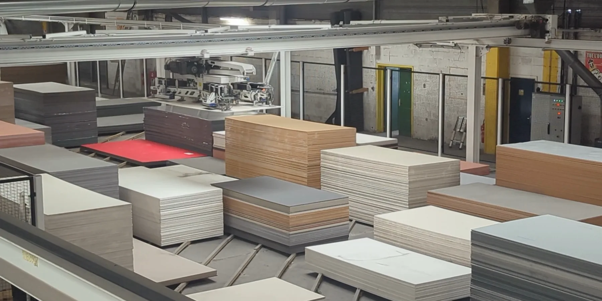

Documentation
Catalogue, demandes d’étude et d’optimisation, avis et notices techniques : tout ce qu’il faut pour préparer votre chantier.
Le catalogue
Atelier des Façadiers.
Conçu pour vous accompagner dans vos projets de façade : la gamme complète de panneaux, notre stock disponible immédiatement, les gammes de nos partenaires (formats, couleurs, références), les accessoires et systèmes de pose, nos solutions d’ossature, ancrages et isolants.
- Version numérique sur notre site
- Version papier disponible sur demande

Note de calcul,
demande d’optimisation.
Étude ossature
Téléchargez la fiche de renseignements et renvoyez-la avec le plan et la coupe de vos façades au format DWG.
Demande d’optimisation
Nous sommes certifiés pour la transformation des panneaux Equitone, Fundermax, Trespa, Stacbond et Alpolic, dont les fournisseurs bénéficient du droit d’usage de la marque QB.
Avis techniques
par fournisseur.
Les documents sont hébergés sur le site de l’Atelier des Façadiers.
Fundermax 10 documents
- Avis Technique FUNDERMAX - QB54 - CERTIFICAT
- Avis Technique FUNDERMAX - QB54-CAHIER CSTB-3824-MISE EN OEUVRE BARDAGE
- Avis Technique FUNDERMAX - QB54 Notice technique ossature bois et ossature métallique
- Avis Technique FUNDERMAX - ME01 fixation invisible 216-1749 - 30/09/2021
- Avis Technique FUNDERMAX - ME06 plateau métallique - 31/10/2030
- Avis Technique FUNDERMAX - Eclip’s fixation invisible - 30/09/2027
- Document technique FUNDERMAX - Certificat Label produit biosourcé - 11/12/2022
- Document technique FUNDERMAX - Informations techniques - 01/06/2020
- Document technique FUNDERMAX - Fiche de déclaration environnementale et sanitaire - 01/06/2025
- Document technique FUNDERMAX - Système Max Exterior Eclip’s®
Trespa 9 documents
- Avis Technique TRESPA - ATEX TS208 - 31/12/2028
- Avis Technique TRESPA - QB54-CAHIER CSTB-3824-MISE EN OEUVRE BARDAGE
- Avis Technique TRESPA - QB54 - CERTIFICAT TS700 - OSSATURE METALLIQUE
- Avis Technique TRESPA - QB54 NOTICE TECHNIQUE TS700 - OSSATURE METALLIQUE
- Avis Technique TRESPA - QB54 - CERTIFICAT TS150 - OSSATURE BOIS
- Avis Technique TRESPA - QB54 NOTICE TECHNIQUE TS150 - OSSATURE BOIS
- Avis Technique TRESPA - TS725 - pose sur plateau métallique - 30/04/2026
- Avis Technique TRESPA - Avis technique PURA - 31/12/2025
- Avis Technique TRESPA - METEON TS200 système invisible - 31/05/2026
Equitone 16 documents
- Avis Technique EQUITONE - ATEX Panneaux EQUITONE sur Façade à Ossature Bois (FOB) - 03/10/2028
- Avis Technique EQUITONE - ATEX panneaux ondulés - pose en FOB - 18/09/2028
- Avis Technique EQUITONE - CAHIER QB54 - MISE EN OEUVRE BARDAGE
- Avis Technique EQUITONE - CERTIFICAT QB54 - EQUITONE - UNIRIVET - OSSATURE METALLIQUE
- Avis Technique EQUITONE - NOTICE TECHNIQUE - EQUITONE - UNIRIVET - OSSATURE METALLIQUE
- Avis Technique EQUITONE - CERTIFICAT QB54 - EQUITONE - UNIVIS - OSSATURE BOIS
- Avis Technique EQUITONE - NOTICE TECHNIQUE - EQUITONE - UNIVIS - OSSATURE BOIS
- Avis Technique EQUITONE - ATEX Système Double Peau ETEX - 31/10/2031
- Avis Technique EQUITONE - ATEC EQUITONE Fixation invisible Tergo Design - 31/10/2028
- Document technique EQUITONE - Essai LEPIR 2
- Document technique EQUITONE - Déclaration environnementale [pictura] et [natura] pro - 12/10/2020
- Document technique EQUITONE - Déclaration environnementale [tectiva] - 15/09/2025
- Document technique EQUITONE - Déclaration environnementale [linea] et [lunara] - 12/10/2020
- Document technique EQUITONE - Essentiels pose EQUITONE Unirivets, ossature métallique
- Document technique EQUITONE - Essentiels pose EQUITONE Univis, ossature bois
- Nuancier EQUITONE (avec [inspira]) - 17/01/2025
Rockpanel 9 documents
- Avis Technique ROCKPANEL - ROCKPANEL PREMIUM A2 FIXATIONS INVISIBLES PAR AGRAFES - 28/02/2029
- Avis Technique ROCKPANEL - AT_OSSATURE BOIS SUR BETON - 31/03/2022
- Avis Technique ROCKPANEL - AT_OSSATURE BOIS SUR BOIS - 30/06/2028
- Avis Technique ROCKPANEL - AT_OSSATURE METALLIQUE - 30/06/2028
- Avis Technique ROCKPANEL - AT_POSE SUR PLATEAU - 30/04/2026
- Document technique ROCKPANEL - Essai LEPIR II bardage ventilée RPL sans bavette
- Document technique ROCKPANEL - EPD Rockpanel Durable & A2
- Document technique ROCKPANEL - FDES Rockpanel A2 9mm
- Fiche technique ROCKPANEL
Stacbond 7 documents
- Avis Technique STACBOND - STACBOND CASSETTE CH -1548_V3 - 30/06/2027
- Avis Technique STACBOND - STACBOND STB-RIVETE_VISSE_V2 - 30/06/2027
- Document technique STACBOND - Fiche technique FR
- Document technique STACBOND - Fiche technique A2
- Document technique STACBOND - Essai LEPIR 2
- Document technique STACBOND - FDES STACBOND FR/A2
- Fiche technique STACBOND - Catalogue Stacbond
Alpolic 6 documents
- Avis Technique ALPOLIC - Fixation visible FR et A2 AC2191803_V3 - 31/03/2028
- Avis Technique ALPOLIC - K7 FR et A2 AC2191803_V3 - 31/01/2026
- Nuancier ALPOLIC - Color the World
- Nuancier ALPOLIC - Design & Performance 2024
- Document technique ALPOLIC - Appréciation de laboratoire (essai LEPIR 2)
- Fiche technique ALPOLIC